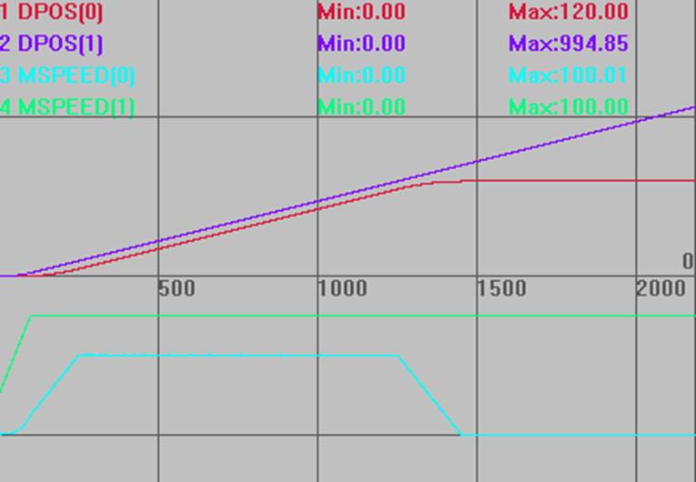
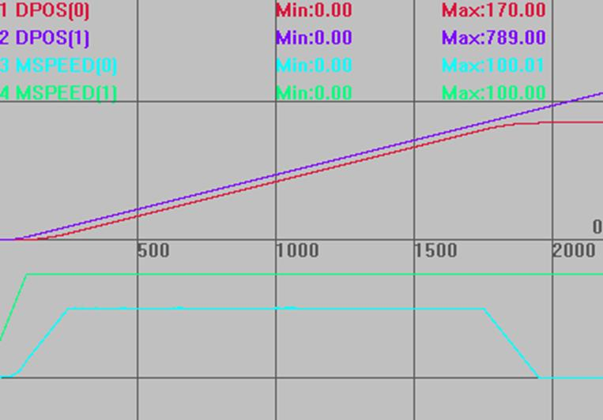
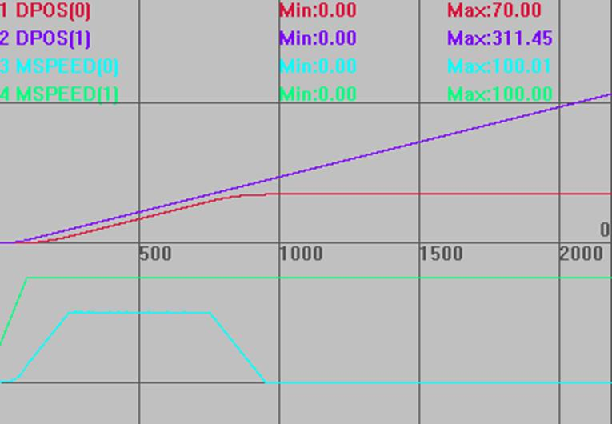
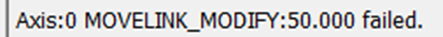
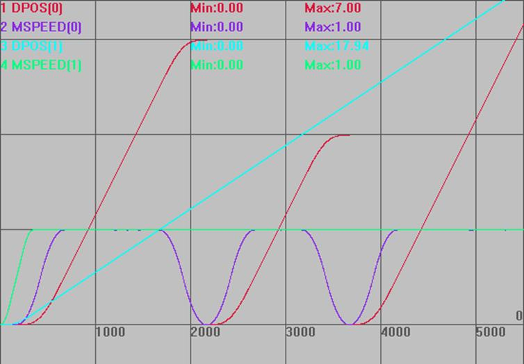

|
类型 |
轴参数 |
|
描述 |
相对修改MOVELINK指令的同步区长度。 带入运动缓冲，只在同步段后设置生效。 |
|
语法 |
VAR1 = MOVELINK_MODIFY，MOVELINK_MODIFY = expression |
|
适用控制器 |
20160926以后固件版本支持。 |
|
例子 |
例一： RAPIDSTOP(2) WAIT IDLE(0) WAIT IDLE(1) BASE(0,1) UNITS=100,100 ATYPE=1,1 DPOS=0,0 SPEED=100,100 ACCEL=1000,1000 DECEL=1000,1000 TRIGGER '自动触发示波器 未修改同步距离 MOVELINK(10,20,20,0,1) '工作台加速阶段 MOVELINK(100,100,0,0,1) '同步阶段100 MOVELINK(10,20,0,20,1) '减速阶段 VMOVE(1) AXIS(1)
运动轨迹和速度曲线 DPOS(0)垂直刻度200，无偏移 DPOS(1)垂直刻度200，无偏移 MSPEED(0)垂直刻度200，偏移-200 MSPEED(1)垂直刻度200，偏移-150 
其他条件同上，增加同步距离 MOVELINK(10,20,20,0,1) '工作台加速阶段 MOVELINK(100,100,0,0,1) '同步阶段100 MOVELINK_MODIFY = 50 '修改同步段为100+50 MOVELINK(10,20,0,20,1) '减速阶段

其他条件同上，减少同步距离 MOVELINK(10,20,20,0,1) '工作台加速阶段 MOVELINK(100,100,0,0,1) '同步阶段100 MOVELINK_MODIFY = -50 '修改同步段为100-50 MOVELINK(10,20,0,20,1) '减速阶段
 注意，只能在同步段后使用此指令，在加减速段使用会报错，无法修改。 MOVELINK(10,20,20,0,1) '工作台加速阶段 MOVELINK_MODIFY = 50 MOVELINK(100,100,0,0,1) '同步阶段100 
例二：从轴追剪轴采用S曲线加减速 RAPIDSTOP(2) WAIT IDLE(0) WAIT IDLE(1) DATUM(0)
BASE(0,1) UNITS=10000,10000 ATYPE=0,0 DPOS=0,0 SPEED=1,1 '型材运行速度1m/s,60m/min ACCEL=2,2 DECEL=2,2 SRAMP=200,200
STOPTASK 1 RUNTASK 1,Task_FlyShear DELAY(200)
VMOVE(1) AXIS(1) '型材持续运动 TRIGGER '自动触发示波器 END
Task_FlyShear: WHILE 1 BASE(0) 'MOVELINK_MODIFY=0 '先清空 MOVELINK(3,4,1,1,1,8) AXIS(0) WAIT IDLE(0)
BASE(0) DPOS=0 'MOVELINK_MODIFY=0 '先清空 MOVELINK(3,4,1,1,1,8) AXIS(0) WAIT UNTIL MPOS(0)>1 '等待跟随轴距离>2 MOVELINK_MODIFY=-1 '把跟随轴距离减少1 WAIT UNTIL MOVELINK_MODIFY=0 '等待同步偏移完成 WAIT IDLE(0)
BASE(0) DPOS=0 'MOVELINK_MODIFY=0 '先清空 MOVELINK(3,4,1,1,1,8) AXIS(0) WAIT UNTIL MPOS(0)>1 '等待跟随轴距离>2 MOVELINK_MODIFY=1 '把跟随轴距离增加1 WAIT UNTIL MOVELINK_MODIFY=0 '等待同步偏移完成 WEND
运动轨迹和速度曲线 DPOS(0)垂直刻度1，无偏移 MSPEED(0)垂直刻度1，无偏移 DPOS(1)垂直刻度3，无偏移 MSPEED(1)垂直刻度1，无偏移  |
|
相关指令 |